Day 15｜SSH 跳板機的部署與權限設計（上）：Linux 路由切換與建立安全入口
對應文章：Day 15｜SSH 跳板機的部署與權限設計（上）：Linux 路由切換與建立安全入口
本日先將 pve01～pve03 的預設出口從現有路由器切換到 OPNsense，再建立 VMID 231、IP 10.77.50.11/24 的 jump01。WAN 使用 TCP 45222 轉送到 jump01 TCP 22。
1. 切換三台 PVE 的對外出口
Day 03～15 使用現有路由器是為了在 OPNsense 尚未完成時安裝、建立 Cluster 與保留救援路徑，不是長期安全架構。Day 14 已完成 OPNsense VLAN、Alias 與基礎規則，現在把三台 L1 PVE 的 Default Gateway 切到 VLAN 10，讓它們的 DNS、NTP 與套件更新經過 OPNsense。
本 Lab 採分階段切換：
vmbr1.10成為 PVE 正式管理與對外出口。- 原本
vmbr0的192.168.0.x/24位址先保留，但移除 Default Gateway，只供同一路由器 LAN 與 L0 Console 救援。 - L0
pve-l0繼續使用192.168.0.146/24與路由器 Gateway，因為 fw01 本身運行在 L0，L0 不能把唯一救援路徑放在自己承載的 Firewall VM 後方。 - Corosync
10.77.80.0/24與 Ceph10.77.70.0/24不設 Gateway，本節不修改。
暫時保留舊 192.168.0.x 位址，代表同一個路由器 LAN 在過渡期間仍可能直接碰到 PVE Web UI；它只是一條 Lab 救援路徑，不等於已完成管理平面隔離。正式環境應使用實體隔離或嚴格限制來源的 OOB 網路，並讓一般 PVE Management 流量經過具備備援的防火牆。
1.1 建立 PVE_NODES Alias
到 OPNsense Firewall → Aliases 按 Add：
Name填PVE_NODES。Type選Host(s)。Content分別加入10.77.10.11、10.77.10.12、10.77.10.13。Description填PVE management addresses after Day 15 cutover。- Save 後按
Apply。
這是因 Day 15 新增 PVE Management 切換所需的 Alias；Day 14 已建立的其他 Alias 全部保留，不用重做。
1.2 先建立 PVE 出口規則
進入 OPNsense Firewall → Rules。每次按右下角橘色 +，Interface 都只選 LAN，依序建立：
- DNS：Interface
LAN、ActionPass、VersionIPv4、ProtocolTCP/UDP、SourcePVE_NODES、DestinationLAN address、Destination Port53，Description 填PVE_NODES to OPNsense DNS。 - Gateway 診斷：Interface
LAN、ActionPass、VersionIPv4、ProtocolICMP、SourcePVE_NODES、DestinationLAN address，Description 填PVE_NODES ping OPNsense gateway。 - NTP：Interface
LAN、ActionPass、VersionIPv4、ProtocolUDP、SourcePVE_NODES、Destinationany、Destination Port123，Description 填PVE_NODES outbound NTP。 - 阻擋其他內網：Interface
LAN、ActionBlock、VersionIPv4、Protocolany、SourcePVE_NODES、DestinationINTERNAL_NETWORKS，勾選 Log，Description 填Block PVE_NODES to routed internal networks。 - 套件更新：Interface
LAN、ActionPass、VersionIPv4、ProtocolTCP、SourcePVE_NODES、Destinationany、Destination PortBASIC_OUTBOUND_TCP，Description 填PVE_NODES HTTP HTTPS updates。 - 其他對外流量：Interface
LAN、ActionBlock、VersionIPv4、Protocolany、SourcePVE_NODES、Destinationany，勾選 Log，Description 填Block other PVE_NODES egress。
規則順序必須是：
PVE_NODES to OPNsense DNS
PVE_NODES ping OPNsense gateway
PVE_NODES outbound NTP
未來明確允許的 PVE 管理或監控流量
Block PVE_NODES to routed internal networks
PVE_NODES HTTP HTTPS updates
Block other PVE_NODES egress
原本 Default allow LAN to any
最後按左下角 Apply。今天不先刪除 OPNsense 原本的 LAN Default Allow；新增的最後一條 Block 會先擋下 PVE_NODES 其他對外流量，其他尚未盤點的 LAN 管理主機不會因此立即斷線。
1.3 切換前備份與確認
切換期間始終從 L0 Web UI 打開對應 Nested PVE VM 的 Console，不要只保留瀏覽器中的 PVE Web UI。先在 pve01、pve02、pve03 各自執行：
cp /etc/network/interfaces /root/interfaces.before-day15
ip -br address
ip route
pvecm status
chronyc tracking
ceph -s
確認：
- Cluster 目前 Quorate。
- Corosync Link 0 仍是對應的
10.77.80.11、.12、.13。 - Ceph 仍使用
10.77.70.11、.12、.13。 - L0 可直接開啟三台 Nested PVE Console。
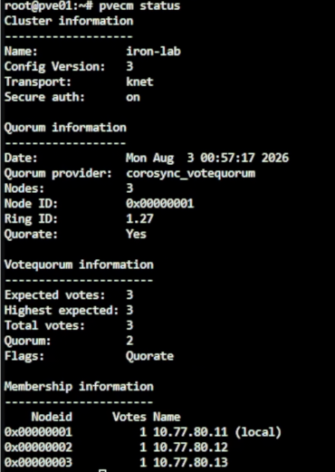
圖（一）切換前確認 PVE Cluster 仍保有 Quorum。
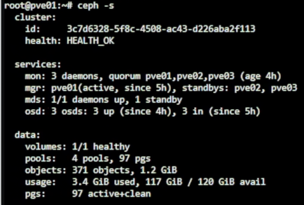
圖（二）切換前確認 Ceph 為 HEALTH_OK。
1.4 先切換 pve01
使用 pve01 目前的 192.168.0.x Web UI，到 pve01 → System → Network：
- 選
vmbr0按Edit，保留原本192.168.0.191/24，只將IPv4 Gateway清空，按OK／Save保存為 Pending Change，但先不按Apply Configuration。 - 選取 Day 05 已建立的
vmbr1.10，按Edit。 - 確認 VLAN raw device 是
vmbr1，VLAN Tag 是10。 - 確認 IPv4/CIDR 是
10.77.10.11/24。 - 將原本留白的 IPv4 Gateway 改為
10.77.10.1。 - IPv6 保持不設定，確認
Autostart已勾選，Comment 可改為PVE Management via OPNsense。 - 儲存後檢查 Pending Changes：
vmbr0只移除 Gateway，vmbr1.10保留10.77.10.11/24並新增 Gateway。 - 若先前略過 Day 05、畫面中沒有
vmbr1.10，才按Create→Linux VLAN，依照上述數值補建。 - 保持 L0 Console 開啟，按
Apply Configuration。 - 到 pve01
System→DNS，DNS Server 改為10.77.10.1，Search Domain 保持lab.home。
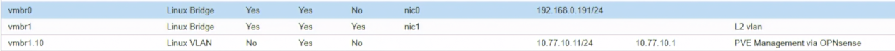
圖（三）pve01 的 vmbr1.10 使用 10.77.10.11/24，並將預設閘道設為 10.77.10.1。
Proxmox VE 在 VLAN-aware Linux Bridge 上使用 vmbr1.10 作為 Host Management VLAN 是官方支援的配置方式。一台 Host 只保留一條 IPv4 Default Gateway；不可讓 vmbr0 與 vmbr1.10 同時存在 Default Gateway。
1.5 驗證 pve01 後才處理其他節點
在 pve01 Console 執行：
ip -br address show vmbr1.10
ip route
ip route get 1.1.1.1
ping -c 3 10.77.10.1
getent hosts download.proxmox.com
curl -4I https://download.proxmox.com/
apt update
chronyc tracking
pvecm status
ceph -s
預期 ip route get 1.1.1.1 顯示：
via 10.77.10.1 dev vmbr1.10 src 10.77.10.11
同時到 OPNsense Firewall → Log Files → Live View，使用 Source 10.77.10.11 過濾，確認 DNS、NTP、HTTP／HTTPS 命中剛才建立的規則。
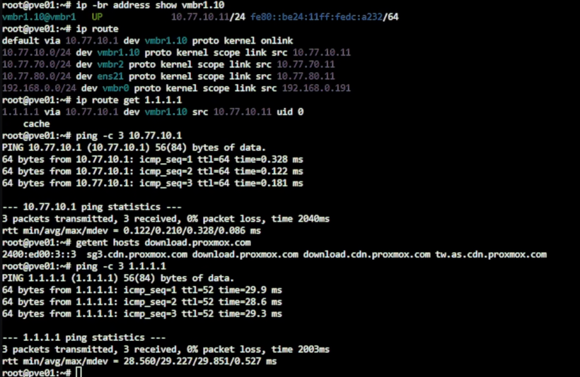
圖（四）路由查詢顯示外部流量經 vmbr1.10 與 10.77.10.1 送出，DNS 解析與 Gateway 連線也正常。
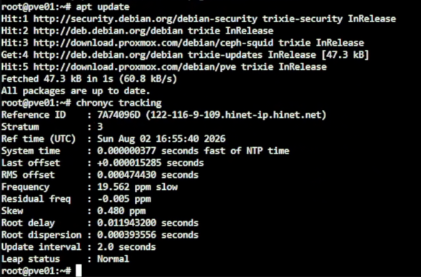
圖（五）APT 更新與 Chrony 狀態確認套件出口及時間同步均可正常運作。
只有 pve01 的 Web UI、APT、Time Sync、Cluster 與 Ceph 全部正常後，才使用相同步驟處理：
- pve02：
vmbr1.10設10.77.10.12/24，Gateway10.77.10.1。 - pve03：
vmbr1.10設10.77.10.13/24，Gateway10.77.10.1。
不可同時 Apply 三台節點的網路設定。
1.6 切換完成後的名稱解析
三台都能從 VLAN 10 上網後，將內部 DNS 或每台 PVE 的 /etc/hosts 更新為：
10.77.10.11 pve01.lab.home pve01
10.77.10.12 pve02.lab.home pve02
10.77.10.13 pve03.lab.home pve03
在三台分別確認：
getent hosts pve01.lab.home
getent hosts pve02.lab.home
getent hosts pve03.lab.home
pvecm nodes
pvecm status
本節不修改 Hostname，也不修改 Corosync link0，只是將原 Hostname 改解析到正式 Management VLAN 位址。後續使用 https://pve01.lab.home:8006、pve02.lab.home:8006、pve03.lab.home:8006 管理節點。
目前 Windows 管理電腦仍在 192.168.0.0/24，上游路由器通常不知道 10.77.10.0/24 要往哪裡送。不要為了省事在上游建立一條會繞過 OPNsense 的一般路由；可經已連到 VLAN 10 的 L0 建立 SSH Tunnel：
ssh -L 8011:10.77.10.11:8006 -L 8012:10.77.10.12:8006 -L 8013:10.77.10.13:8006 root@192.168.0.146
保持視窗開啟，分別瀏覽 https://127.0.0.1:8011、:8012、:8013。瀏覽器顯示憑證名稱警告是因為網址使用 127.0.0.1；這只是 Lab Tunnel 的已知限制，不是正式環境的憑證處理方式。若 L0 SSH 尚未開放，先使用 L0 PVE Console 與舊救援 IP 驗證，不要臨時建立不受控的跨網段路由。
1.7 失聯時回復
若切換後無法上網，不要連續修改其他節點。從 L0 開啟該 Nested PVE Console，先臨時恢復舊 Default Route：
ip route replace default via 192.168.0.1 dev vmbr0
這只是當次開機的臨時回復。要永久回復，使用舊 192.168.0.x Web UI 或 L0 Console：
- 將
vmbr1.10的 IPv4 Gateway 清空。 - 將
vmbr0的 IPv4 Gateway 恢復為192.168.0.1。 - Apply Configuration。
- 必要時依
/root/interfaces.before-day15對照原設定，不要盲目覆蓋正在運作的網路檔。
2. 從 Template 建立 VM
在 pve03：
- 右鍵 Debian Template →
Clone。 - Mode 選 Full Clone。
- VMID
231、Namejump01、Target Storage 選local-lvm。 - 完成 Clone 後先不要啟動 VM。Clone 畫面只能選擇儲存位置，磁碟容量會直接繼承 Template，不會出現 Disk Size 欄位。
- 選擇 VM 231
jump01→Hardware，將 CPU 設為 1 vCPU、Memory 設為 1GB。 - 在
Hardware選取Hard Disk (scsi0)，按Disk Action→Resize。 - 先看清單中
scsi0目前容量。如果 Debian Cloud Image 是 3 GiB，Size Increment (GiB)填入5，完成後總容量就是 8 GiB。這個欄位填的是增加量，不是最終容量，因此不要填8。 - 如果
scsi0已經是 8 GiB 或更大，不要再 Resize。Proxmox VE 可以擴大虛擬磁碟，但不支援直接將現有虛擬磁碟縮小到 8 GiB；Lab 可直接保留較大容量。 - Network Device 接
vmbr1、VLAN Tag50。 - Cloud-Init 設定管理用 SSH 公鑰，不設定共用密碼。
- IP 設
10.77.50.11/24、Gateway10.77.50.1、DNS10.77.50.1。 - Regenerate Image 後啟動。
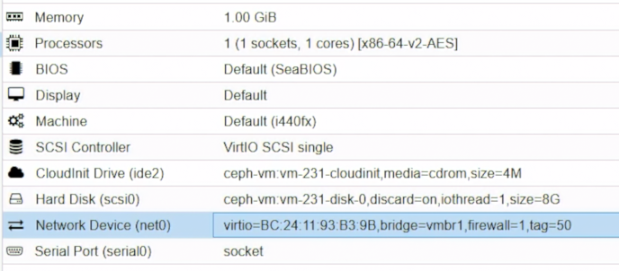
圖（六）jump01 的 CPU、Memory、Disk 與 VLAN 50 NIC。
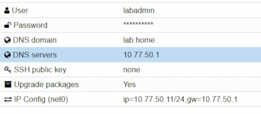
圖（七）jump01 的 Cloud-Init IP、Gateway 與 DNS。
此圖只核對 IP、Gateway 與 DNS；畫面中的密碼與 SSH 公鑰為建置當時狀態，後續以 opsadmin 專用金鑰取代。
如果 GUI 找不到 Resize，可在 VM 231 所在的 PVE 節點先確認磁碟名稱，再將它擴大到最終 8 GiB：
qm config 231 | grep '^scsi0:'
qm disk resize 231 scsi0 8G
8G 是 CLI 的最終容量寫法，與 GUI 要填「增加量」不同。磁碟擴大後啟動 jump01，Debian Cloud Image 通常會由 Cloud-Init 自動擴展 Partition 與 Filesystem。登入後確認：
lsblk
df -h /
cloud-init status --long
如果 scsi0 已是 8 GiB，但根目錄仍顯示舊容量，先不要猜測分割區名稱或直接執行 resize2fs；先保留 lsblk -f 與 findmnt / 輸出，依實際 Partition 與 Filesystem 類型處理。
登入後：
sudo hostnamectl set-hostname jump01
sudo apt update
sudo apt full-upgrade -y
sudo apt install -y openssh-server fail2ban auditd nftables
ip -br address
ip route
本日的安全驗證範圍為 OpenSSH 與 nftables；fail2ban 與 auditd 先完成安裝，相關規則留待後續設定。
3. 建立管理帳號
3.1 在本地 Windows 電腦產生專用 SSH 金鑰
在管理電腦開啟 PowerShell。這裡為 jump01 建立一組獨立的 Ed25519 金鑰，不與其他主機共用：
$Jump01KeyDirectory = Join-Path $env:USERPROFILE '.ssh\ithome_jump01_ed25519'
$Jump01Key = Join-Path $Jump01KeyDirectory 'id_ed25519'
New-Item -ItemType Directory -Force -Path $Jump01KeyDirectory | Out-Null
ssh-keygen -t ed25519 -a 100 -f $Jump01Key -C 'opsadmin@jump01'
ssh-keygen 會要求輸入兩次 Passphrase。正式使用建議設定 Passphrase；若檔案已存在，不要直接同意覆蓋，先換一個檔名或確認舊 Key 已不再使用。
產生後會得到：
%USERPROFILE%\.ssh\ithome_jump01_ed25519\id_ed25519 私鑰，只留在本地電腦
%USERPROFILE%\.ssh\ithome_jump01_ed25519\id_ed25519.pub 公鑰，可以放到 jump01
顯示公鑰並複製到剪貼簿：
Get-Content "${Jump01Key}.pub"
Get-Content "${Jump01Key}.pub" | Set-Clipboard
公鑰應是一整行，開頭通常是 ssh-ed25519。私鑰只留在本地管理電腦，不得貼入終端、文件或 Repository。
3.2 在 jump01 建立帳號並安裝公鑰
從 PVE 開啟 VM 231 Console、登入 labadmin 後先確認：
hostnamectl --static
jump01
若顯示 pve01～pve03，代表仍在 PVE 節點，請先切回 jump01。
sudo adduser opsadmin
sudo usermod -aG sudo opsadmin
sudo install -d -m 700 -o opsadmin -g opsadmin /home/opsadmin/.ssh
sudo install -m 600 -o opsadmin -g opsadmin /dev/null /home/opsadmin/.ssh/authorized_keys
用編輯器將管理電腦的公鑰貼入：
sudoedit /home/opsadmin/.ssh/authorized_keys
把 PowerShell 複製的 ssh-ed25519 ... opsadmin@jump01 完整一行貼入。authorized_keys 只保留一份公鑰，不要重複貼上，也不要留下單獨的 .、提示符號或換行後的其他文字。儲存後再次修正擁有者與權限：
sudo chown -R opsadmin:opsadmin /home/opsadmin/.ssh
sudo chmod 700 /home/opsadmin/.ssh
sudo chmod 600 /home/opsadmin/.ssh/authorized_keys
完成第 6 節的 DNAT 後，在本地 PowerShell 讀取 fw01 當下的 WAN IP 並測試：
$Fw01WanIp = Read-Host '請輸入 fw01 目前顯示的 WAN IP'
ssh -i $Jump01Key -p 45222 "opsadmin@$Fw01WanIp"
第一次連線先核對畫面上的 Host Key Fingerprint，再輸入 yes。套用 OpenSSH 設定前先保持 PVE Console 開啟；完成第 6 節的目的地 NAT 與 WAN 規則後，再由另一個 PowerShell 視窗驗證 opsadmin Key 登入。若驗證失敗，可透過 Console 回復 OpenSSH 設定。
4. SSH 安全設定
建立 /etc/ssh/sshd_config.d/20-bastion-hardening.conf：
PermitRootLogin no
PasswordAuthentication no
KbdInteractiveAuthentication no
PubkeyAuthentication yes
AllowAgentForwarding no
X11Forwarding no
PermitTunnel no
GatewayPorts no
MaxAuthTries 3
LoginGraceTime 30
ClientAliveInterval 300
ClientAliveCountMax 2
AllowUsers opsadmin
驗證後只 Reload：
sudo sshd -t
sudo systemctl reload ssh
sudo sshd -T | grep -E 'permitrootlogin|passwordauthentication|allowagentforwarding|maxauthtries'
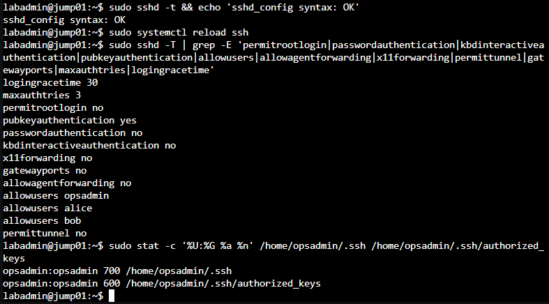
圖（八）OpenSSH 關閉 root、密碼及鍵盤互動式驗證並啟用公鑰驗證；opsadmin 的 SSH 目錄及 authorized_keys 權限分別為 700、600。
不要在唯一 Session 中直接 Restart。保持 PVE Console 與既有 SSH Session，直到新 Session 驗證完成。
5. Debian 主機防火牆
建立 /etc/nftables.conf，只允許 SSH 與必要回應：
flush ruleset
table inet filter {
chain input {
type filter hook input priority 0; policy drop;
ct state established,related accept
iifname "lo" accept
ip protocol icmp accept
tcp dport 22 ct state new accept
}
chain forward { type filter hook forward priority 0; policy drop; }
chain output { type filter hook output priority 0; policy accept; }
}
sudo nft -c -f /etc/nftables.conf
sudo systemctl enable --now nftables
sudo nft list ruleset
OPNsense 負責來源限制；主機防火牆再確保 jump01 不會成為 Router。
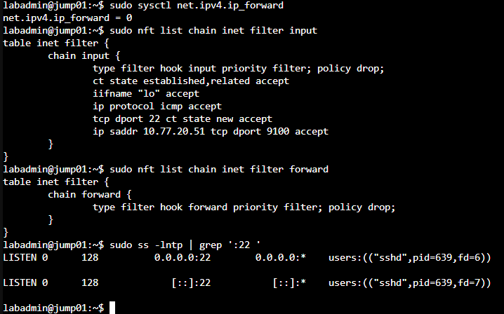
圖（九）IPv4 Forwarding 已關閉，nftables 的 Input 與 Forward Chain 採預設丟棄，sshd 只監聽 TCP 22。
6. 啟用 OPNsense Port Forward
OPNsense 26.7 將舊版 Port Forward 選單改名為 Destination NAT。進入 Firewall → NAT → Destination NAT，按 Add 後依序設定：
- Interface 選
WAN。 - TCP/IP Version 選
IPv4。 - Protocol 選
TCP。 - Destination 選
WAN address。 - Destination Port 填
45222。 - Redirect target IP 填
10.77.50.11。 - Redirect target Port 填
22。 - Description 填
WAN_45222_TO_JUMP01_SSH。 - 展開
Options；若畫面有Firewall rule，選Manual。若沒有這個欄位，就保留預設，下一節仍手動建立 WAN 規則。
Save／Apply。這條規則只負責把 fw01 WAN:45222 改寫成 10.77.50.11:22。本系列將 Firewall rule 設為 Manual，因此下一節會另外建立可檢視及調整的 WAN 規則。
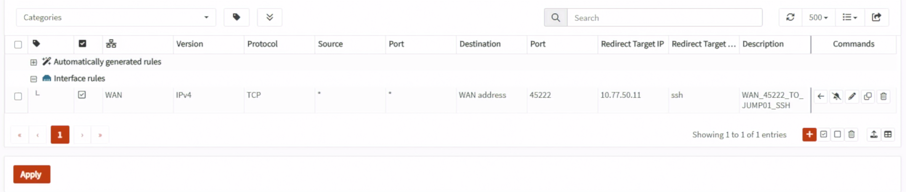
圖（十）Destination NAT 將 WAN address:45222 轉送至 10.77.50.11:22。
6.1 手動建立 WAN Allow Rule
進入 Firewall → Rules，按右下角橘色 + 建立：
- Interface 選
WAN。 - Action 選
Pass。 - TCP/IP Version 選
IPv4。 - Protocol 選
TCP。 - Source 選
any；正式環境有固定管理來源時改用來源 IP Alias。 - Destination 選 Day 14 已建立的
BASTION_HOSTAlias；其內容是10.77.50.11。 - Destination Port 填
22。 - 勾選 Log，Description 填
ALLOW_WAN_DNAT_TO_JUMP01_SSH。 - 本 Lab 從與 fw01 WAN 同為
192.168.0.0/24的 Windows 電腦測試，因此展開 Advanced，將Disable reply-to勾選，或將reply-to設為Disable／None。 - Save 後按
Apply。本系列沒有另外建立一條可見的 WAN 最終 Block Rule；未命中這條 Allow 的其他 WAN 流量，會由 OPNsense／pf 內建的隱含 Default Deny 拒絕。若你自行建立過明確 Block，才需要確認這條 Allow 位於它上方。
圖（十一）WAN Pass Rule 比對轉換後的 BASTION_HOST 與 SSH 連接埠。
WAN 規則使用轉送後的目的 10.77.50.11:22，不是原始的 WAN address:45222，因為 Destination NAT 會先改寫目的位址，Firewall Filter 再比對封包。到 Live View 時可用 Description、來源位址與 10.77.50.11:22 確認命中。
本 Lab 的 Windows 與 fw01 WAN 位於同一網段，因此這條規則要停用 reply-to。修改後到 Firewall → Diagnostics → States 刪除 TCP 45222 的舊測試 State 再重連；正式 Internet 或 Multi-WAN 環境不要直接照抄。
Double NAT 時還要在上游路由器把 TCP 45222 轉送到 fw01 WAN IP。本系列已知上游具有可接受入站連線的公網 IPv4；完成兩層轉送後，必須從真正外部網路驗證，不能只用同網段或模擬 WAN 用戶端結果宣稱 Internet 可連入。
7. 驗證
從 WAN 側的 Windows PowerShell 使用本節建立的專用 Key 測試：
$Jump01Key = Join-Path $env:USERPROFILE '.ssh\ithome_jump01_ed25519\id_ed25519'
$Fw01WanIp = Read-Host '請輸入 fw01 目前顯示的 WAN IP'
ssh -i $Jump01Key -p 45222 -o PasswordAuthentication=no "opsadmin@$Fw01WanIp"
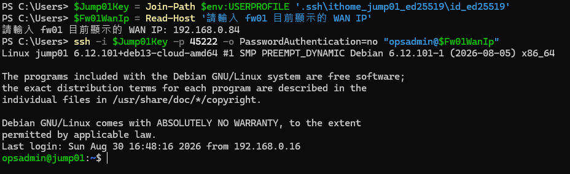
圖（十二）正確的管理帳號與專用私鑰可透過 fw01 WAN TCP 45222 登入 jump01。
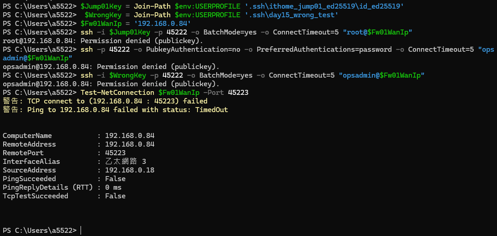
圖（十三）root、密碼及錯誤私鑰均遭到 SSH 拒絕，未開放的 TCP 45223 也無法連線。
確認：
公鑰成功
密碼登入失敗
root 登入失敗
錯誤 Key 失敗
OPNsense Live View 有對應 State
journalctl -u ssh 有登入紀錄